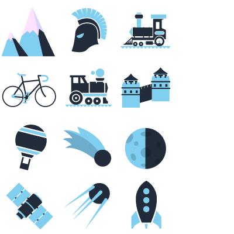

When you go out for a run, you go faster, but everything moves slower. The trees, the shop windows, people walking their dog and even time moves slower. You run listening to music, thinking about your stuff and sometimes, without noticing it, you have come a long way. The same thing happens in Tumblr and you don’t even need to wear your running shoes.
Have you ever thought of how many tumblr scroll kilometers you run each day?
We measure that for you.
runnr is an extension for Chrome. To install it, just use this button:
Done! It’s magic. Now go to tumblr and say \'hi\' to our runnr. From time to time he will tell you about your heroic scroll deeds:
runnr is a project by David López and Marcos Chamizo. We are in no way affiliated with tumblr (besides the millions of hours spent scrolling the site). Also, we guarantee you that runnr doesn’t steal or send us any kind of data from your computer —but if you want to tell us something or if you want us to create something (similar or not) for you, you can write us.
José Copé wrote the texts for this web and Lucía Ponce translated it. All this was inspired by a tweet by @hectorvf1.